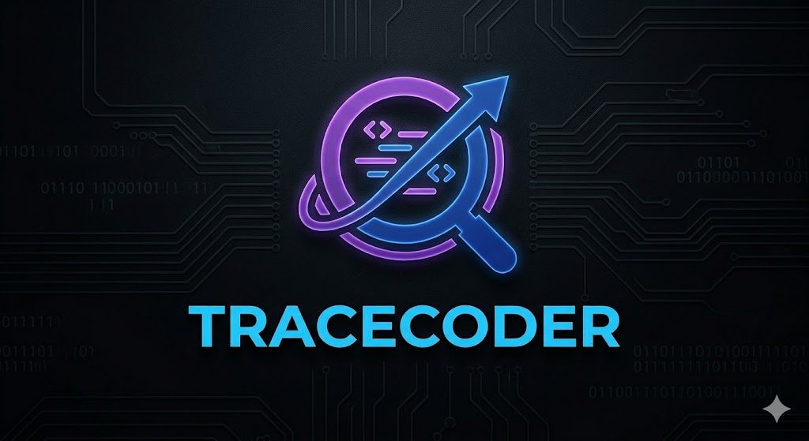

Submission
1
The dependable way to audit competitive-programming submissions—merge fast stylometry, a fine-tuned neural encoder, and optional LLM reasoning into one transparent risk score.
Paste a submission below. The scorer returns a risk score 0–1, a policy decision (accept · review · hold), per-component sub-scores, and human-readable signals. Press Ctrl+Enter to analyze.

Signed-in analyses are saved automatically. Click an entry to reload code and results.
No scans yet. Run an analysis while logged in.
Detection method
Choose how to score the submission, then press Analyze above.
Multi-signal detection
TraceCoder fuses stylometric features, a fine-tuned code encoder, and optional LLM reasoning—so one suspicious submission is judged from structure, semantics, and context—not a single brittle heuristic.
Transparent risk scoring
Every scan returns a calibrated 0–1 risk score, an explicit policy band (accept · review · hold), and human-readable signals—so contest admins know why a flag was raised.
Built for competitive programming
Train and test on problem-disjoint partitions drawn from contest archives and controlled synthetic positives—reducing template leakage and giving metrics you can defend in a thesis or production audit.